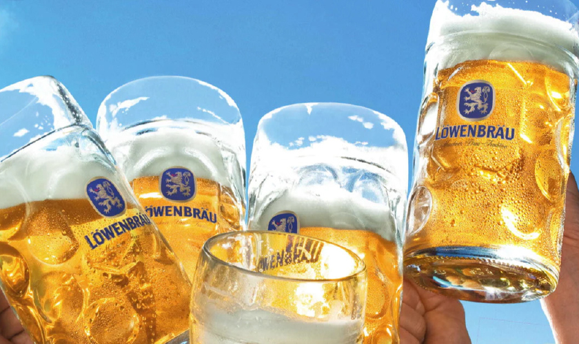

いろんなビアスタイルの魅力を知ろう
クラフトビールのビアスタイルは、なんと110種類以上！
大きくは、下面発酵でつくられる「LAGER/ラガー」と上面発酵でつくられる「ALE/エール」に分かれます。
ピルスナー
チェコで生まれた世界初のゴールド色のビール。
アルコール度数は低め、キレのある爽やかなのどごしとホップの苦味が特徴。
日本で一番親しまれている。一番搾りやハートランドもピルスナー。
アルコール度数は4.1〜5.1%
ドルトムンダー
ドイツ最大のビール生産都市ドルトムントで、ピルスナーを参考に造られたゴールド色のビール。
ピルスナーと比べホップの香りは弱め、マイルドな味わいで口当たりが軽いのが特徴。
日本ではサッポロエビスビールがこれ。アルコール度数は5.1〜6.1%
ヘレス

ミュンヘンで、ピルスナーに対抗して造られた。
南ドイツの水質によりホップを効かすことができないため、麦芽のうまみが濃く、甘味もあり、ホップの苦味が弱いのが特徴。
アルコール度数は4.5%〜5.5%
ボック
ドイツ発祥の伝統的な高アルコールのダークビール。重厚な麦芽の風味とコクのある口あたりが特徴。
名前の由来は、発祥の地であるアインベックから採られたという説と、飲んだ人が「若い雄ヤギのように元気になる」ことから採られたという説あり。
アルコール度数は6.3%〜14.3%
ペールエール
イギリス生まれのダークゴールド〜銅色のビール。
原料に使われた酵母由来のフルーティーな香りとホップ由来の豊かな苦味、すっきりとドライな味わいが特徴。
また、アメリカンスタイルは、フルーティーかつフローラルな柑橘系の香りをもつアメリカ産ホップを使用。
アルコール度数は4.4〜5.3%
IPA
イギリス生まれのインディア・ペールエールは、大量のホップがもたらす鮮烈な香りと苦味、やや高めのアルコール度数が特徴。
大航海時代、当時イギリスの植民地だったインドにおいしいビールを届けるために開発された製法で、防腐作用があるといわれるホップを大量に使ったのが始まり。
アルコール度数は5.1〜7.1%
ホワイトビール
ベルギー生まれの白ビール。
発芽していない小麦を使用。また、オレンジピールやコリアンダーシードを副原料として用いている。豊かな泡立ちと、副原料による柑橘系やスパイスの香りがあり、柔らかな酸味が特徴。
ヒューガルデン・ホワイトや水曜日のネコなど。アルコール度数4.8%〜5.2%
セゾン
もとはベルギーで造られる瓶内二次発酵タイプの自家用ビール。
農家が冬の間に仕込み、夏の農作業の合間に喉を潤すため貯蔵していた。
ピーチ・グレープフルーツ・ライム・ホワイトペッパーを思わせる、フルーティとスパイシーが一体となったセゾン特有の香りや飲み口の軽さが特徴。
アルコール度数は5.0%~9.5%
ランビック
野生酵母を使い自然発酵させて造るビール。3年以上経った古いホップを用い、発酵と熟成に2年半〜3年かける。強い酸味と独特の香りが特徴。
フランボワーズやカシスなどのフルーツを加えて造るものも。
アルコール度数6.3〜8.9%
ケルシュ
ドイツ・ケルンで生まれた明るいゴールド色のビール。
エールの酵母を使って上面発酵し、ラガーのような低温・長時間の熟成で仕上げることで、フルーティーさとキレのある味わいを合わせ持っているのが特徴。
ライトボディだが甘味と苦味のバランスが魅力。アルコール度数は5%前後
ヴァイツェン
南ドイツの伝統的な小麦ビール。
小麦麦芽を50〜70%混ぜ、特殊酵母で発酵させる。クローヴやバナナに似た香りで、ほのかな酸味を伴う。ホップの苦みと香りはほぼ感じない。
ゴールド〜琥珀色で、泡立ち豊か。
アルコール度数4.9〜5.6%
スタウト
アイルランドの醸造家ギネスが考案。焙煎したローストバーレイを使用。
焦がし麦のすっきりした苦味と麦芽のカラメルフレーバーが強く、泡立ちが豊かで泡持ちもよい。アルコール度数4.1〜5.3%
ドライスタウトが主流だが、アルコール度数7~12%のインペリアルスタウトや、乳糖を加えたミルクスタウトなどのバリエーションあり。